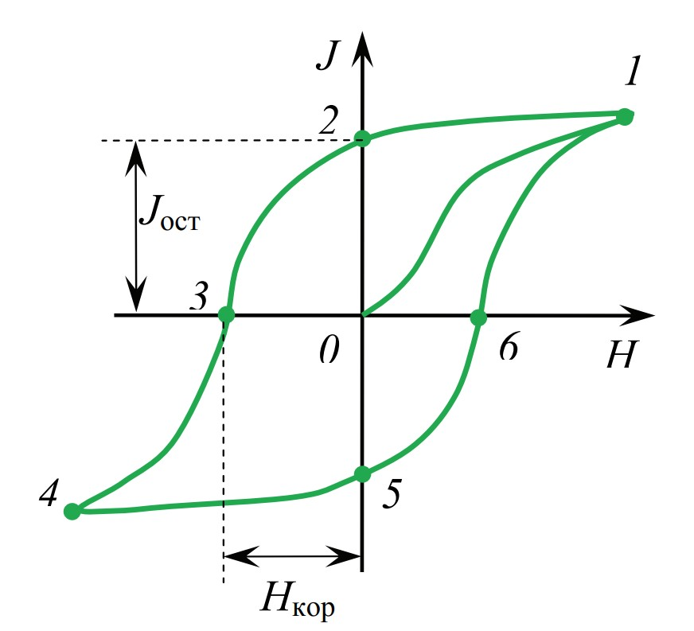
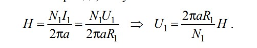
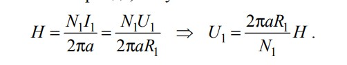
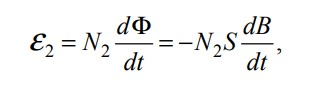
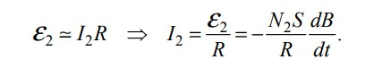
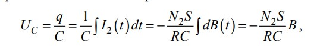
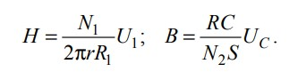
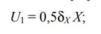

Ферромагнетики
Ферромагнетиками называют вещества, которые могут обладать спонтанной намагниченностью, т. е. намагничены уже при отсутствии внешнего магнитного поля. В этом случае они являются постоянными магнитами. Ферромагнетики относятся к сильномагнитным веществам – их намагниченность в огромное (до 10^10) число раз превосходит намагниченность диа- и парамагнетиков. К числу ферромагнетиков принадлежат железо, кобальт, никель и многие их сплавы. Характерной особенностью ферромагнетиков является сложная нелинейная зависимость намагниченности J от напряженности H магнитного поля. я. Намагниченность не увеличивается безгранично при увеличении напряженности. Уже при сравнительно небольших значениях H намагниченность J достигает предельного значения Jнас, которое называют намагниченностью насыщения. Учитывая магнитную индукцию внешнего поля, магнитная инудкция в веществе

Принимая во внимание зависимость J(H) для ферромагнетиков, зависимость B(H) также является сложной функцией. Магнитная индукция быстро нелинейно растет с увеличением напряженности магнитного поля, а после достижения состояния насыщения B продолжает расти с увеличением H по линейному закону: B = μ0H + const, где const = μ0Jнас
Из-за нелинейной зависимости B(H) для ферромагнетиков нельзя ввести магнитную проницаемость μ как определенную постоянную величину, характеризующую магнитные свойства каждого данного ферромагнетика. При этом магнитная восприимчивость χ и магнитная проницаемость μ являются функциями напряженности H магнитного поля. Эти зависимости могут быть построены по данным основной кривой намагничивания
При увеличении H значение μ достигает максимума, а затем убывает, стремясь к
единице при сильных намагничивающих полях. Максимальные значения μ для ферромагнетиков очень велики. Так, для чистого железа μmax = 5000, для молибденового пермаллоя (сплав 79% никеля, 17% железа и
4% молибдена) μмакс = 150 000.
Магнитный гистерезис
 Характерная особенность ферромагнетиков состоит также в том, что их намагниченность не является однозначной и определяется предысторией намагничивания. Это явление получило название магнитного гистерезиса (запаздывания). Если первоначально ненамагниченный ферромагнетик намагнитить до насыщения (точка 1 на) и затем уменьшать напряженность H, то намагничивание изменяется не по первоначальной кривой 0 – 1, а по линии 1 – 2, лежащей выше. В результате, когда H = 0 (точка 2), намагниченность не исчезнет, а станет равна величине Jост, которую называют остаточной намагниченностью. Полное размагничивание ферромагнетика (точка 3) наблюдается под действием поля напряженностью Hкор, имеющего направление, противоположное направлению напряженности поля, вызвавшего намагничивание. Величину Hкор называют коэрцитивной силой. Если дальше продолжить изменять напряженность магнитного поля, то намагниченность изменяется вдоль кривой 3 – 4 – 5 – 6 – 1. Получившуюся замкнутую линию называют петлей гистерезиса.
Существование остаточного намагничивания делает возможным изготовление постоянных магнитов, т. е. тел, которые без затраты энергии создают в окружающем их пространстве магнитное поле. Очевидно, что постоянный магнит тем лучше сохраняет свои свойства, чем больше коэрцитивная сила материала, из которого он изготовлен. Если коэрцитивная сила Hкор велика, ферромагнетик называется жестким. Для него характерна широкая петля гистерезиса. Ферромагнетик с малой Hкор (и соответственно с узкой петлей гистерезиса) называется мягким. Жесткие ферромагнетики используют для изготовления постоянных магнитов, а мягкие для изготовления сердечников трансформаторов.
Физическую природу ферромагнетизма удалось понять только с помощью квантовой механики. Экспериментально было установлено впервые в опытах Эйнштейна и де Гааз, что ферромагнетизм обусловлен спинами электронов. При отсутствии внешних магнитных полей под действием внутренних причин спины электронов стремятся ориентироваться в одном направлении, а, следовательно, спиновые магнитные моменты – в противоположном направлении. Однако образцу в целом быть намагниченным энергетически невыгодно. Поэтому он разбивается на малые макроскопические области спонтанного, т. е. самопроизвольного, намагничивания – эти области называют доменами. Они имеют размеры от 1 мкм до 10^(–2) см. В пределах каждого домена ферромагнетик намагничен до насыщения и имеет определенный магнитный момент. Направление вектора намагниченности в соседних доменах различно, поэтому суммарная намагниченность образца равна нулю, т. е. магнетик в целом не намагничен.
Внешнее магнитное поле ориентирует по полю магнитные моменты не отдельных атомов, как это имеет место в случае парамагнетиков, а целых областей спонтанной намагниченности – доменов. Этот процесс является необратимым, что и служит причиной остаточной намагниченности и гистерезиса
При повышении температуры способность ферромагнетиков намагничиваться уменьшается. Для каждого ферромагнетика имеется определенная температура Tк, при которой происходит разрушение доменной структуры и вещество теряет ферромагнитные свойства. Эту температуру называют температурой или точкой Кюри. Для железа она равна 768°С, для никеля 365°С. При температуре выше точки Кюри ферромагнетик становится обычным парамагнетиком.
Работа установки
Принципиальная схема установки для определения параметров петли гистерезиса осциллографическим методом:
Переменное напряжение частотой 50 Гц подается от лабораторного автотрансформатора (ЛАТРа). Намагничивающая 1 и измерительная 2 обмотки намотаны на образец изучаемого ферромагнетика, который выполнен в виде тороида 3. Число витков в обмотках равно соответственно N1 и N2 . Чтобы на экране осциллографа можно было наблюдать петлю гистерезиса (B = f(H)), необходимо на вход Х подать напряжение, которое пропорционально напряженности Н намагничивающей катушки 1, а на вход Y − напряжение, пропорциональное индукции B в тороиде 3.
Если витки тороидальной катушки 3 уложены равномерно, то
напряженность магнитного поля этой катушки со средним радиусом а и числом витков на единицу длины
 равна
равна
 где N1 − полное число витков обмотки 1. С помощью закона Ома выразим силу I1 тока в первичной цепи через падение напряжения U1, которое снимается с активного сопротивления R1 и подается на вход Х. Используя формулу для напряженности магнитного поля тороида, получим

где N1 − полное число витков обмотки 1. С помощью закона Ома выразим силу I1 тока в первичной цепи через падение напряжения U1, которое снимается с активного сопротивления R1 и подается на вход Х. Используя формулу для напряженности магнитного поля тороида, получим

Таким образом, горизонтальная развертка луча осциллографа осуществляется напряжением U1(t), которое пропорционально мгновенному значению напряженности H(t) намагничивающего поля в сердечнике.
В соответствии с законом Фарадея − Ленца, в измерительной обмотке 2 возникает ЭДС индукции, которая пропорциональна скорости изменения магнитного потока Фт = BS, т. е. 
где N2 − полное число витков в обмотке 2; S − площадь поперечного сечения тороидального сердечника.
Для получения напряжения, которое пропорционально индукции В, во вторичную цепь включена интегрирующая RC-ячейка. Ее параметры подбираются таким образом, чтобы напряжение на активном сопротивлении R (UR = I2*R) было много больше, чем ЭДС самоиндукции в катушке и напряжение UС на конденсаторе. Тогда с помощью 2-го правила Кирхгофа для вторичной цепи получим приближенное уравнение, которое с учетом выражения определяет силу I2 тока во вторичной цепи: 
Напряжение на конденсаторе 
которое пропорционально индукции В, подается на вход Y осциллографа. Выразим напряженность магнитного поля и абсолютное значение магнитной индукции в сердечнике тороида: 
Значения напряжений U1 и UС определяются по размахам X и Y отклонений луча на экране осциллографа, т. е. 
где δХ и δY − чувствительности горизонтального и вертикального отклонений осциллографа; Х и Y − число делений на шкалах экрана, соответствующее размаху луча по осям OХ или OY в обе стороны, т. е. вершинам А1 и А2 петли.
Для построения основной кривой намагничения нужно определить координаты точек вершин петли для разных значений напряженности Н, т. е. разных значений силы I тока в первичной цепи. Для определения коэрцитивной силы Нк и остаточной индукции Вост надо определить координаты точек пересечения петли гистерезиса с горизонтальной (А3) и вертикальной (А4) осями сетки на экране осциллографа. Значения параметров, необходимых для расчетов, указаны в приложении к установке. Значения R и C устанавливаются на магазине сопротивлений и емкостей в процессе выполнения работы. Значение δу определяется по положению указателя на переключателе чувствительности («В/дел»), расположенному на передней панели осциллографа. Значение δх указано на установке.
К структуре установки